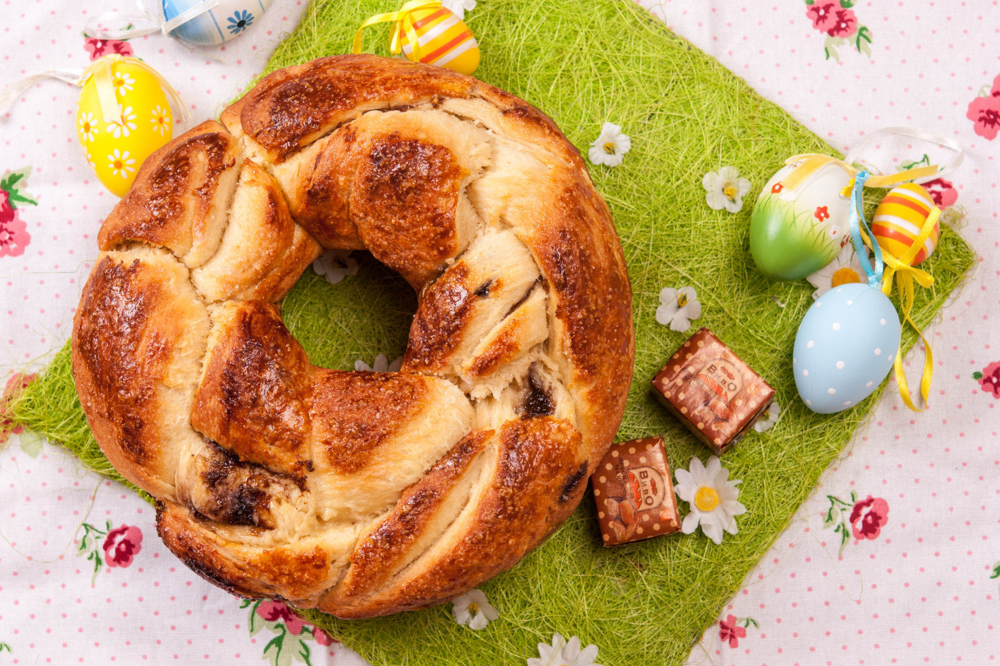

Да приготвим вкусен козунак е лесно! Истината е, че за вкусния козунак са нужни единствено качествени продукти и добро настроение! Тази рецепта за козунак на Супичка иска да даде кураж на всеки, който се чуди дали да се заеми с приготвянето на козунаци сам вкъщи! Дори и да не можеш да месиш пак можеш да приготвиш вкусен козунак на конци, като се довериш на рецептата за козунак на Супичка, която залага на блъскането на тестото. Да, блъскане и удряне в работния плот! Съчетавайки тренировката, с освобождаване от отрицателната енергия и приготвяне на съвършеното тесто за козунак, рецептата за вкусен козунак на конци на Супичка е рецептата, която ще те развесели, а полученият козунак ще впечатли и най-придирчивите!
📖
Лесна
⏱️
120 мин.
🍴
12